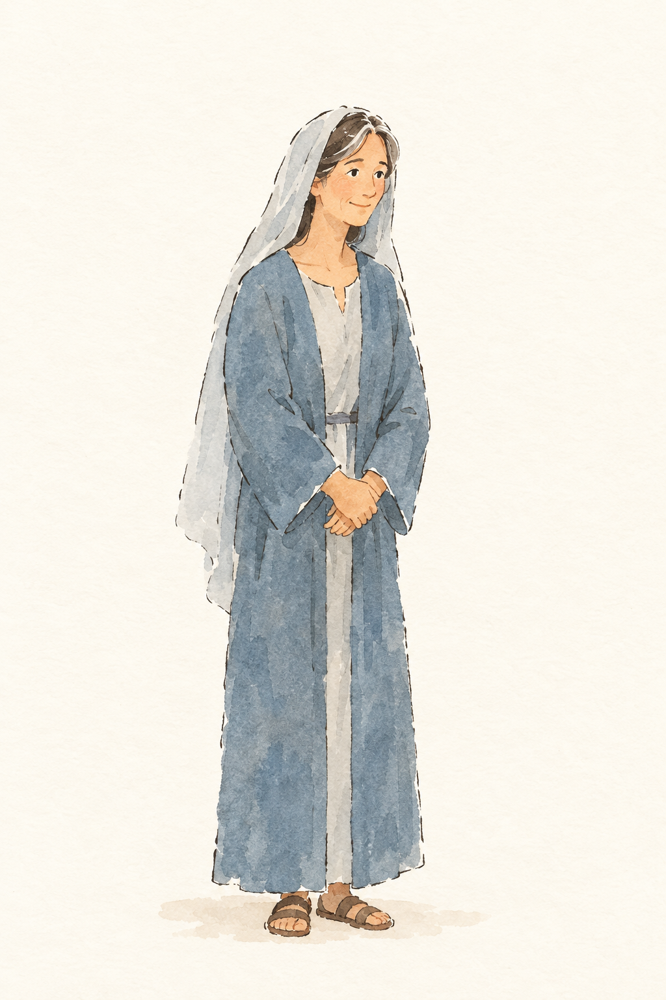
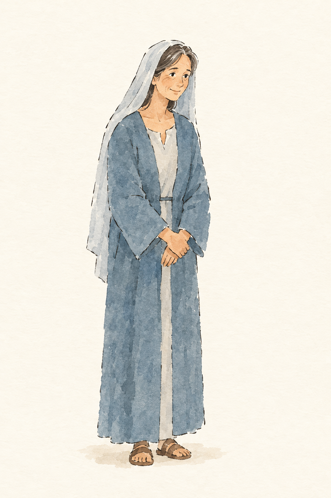
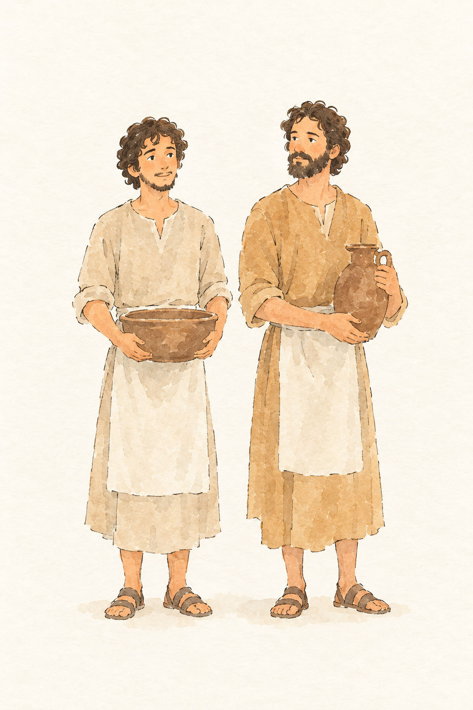
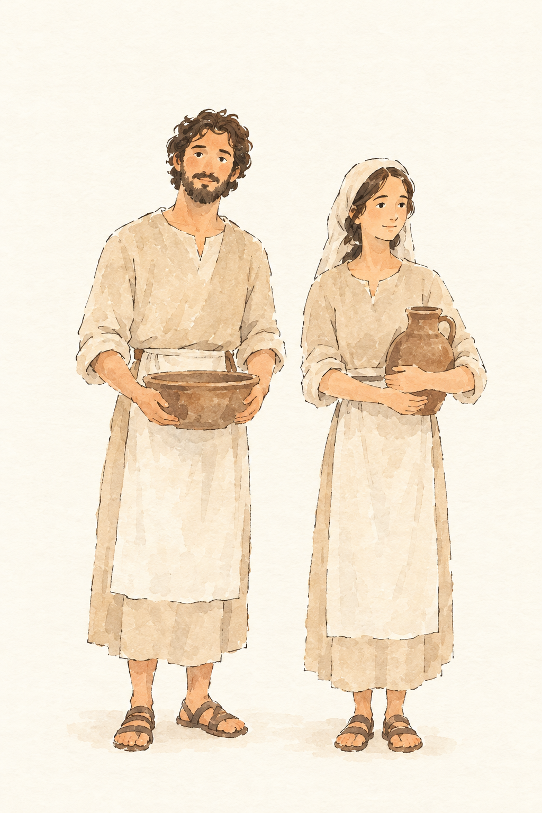
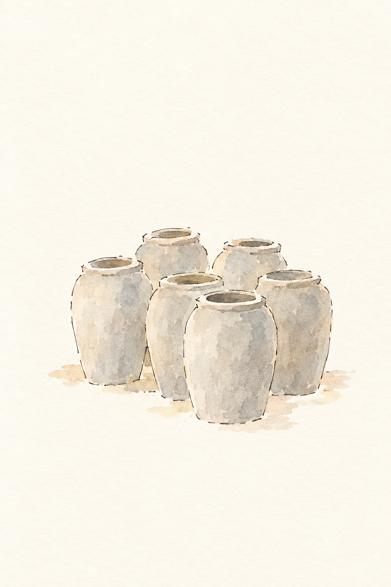
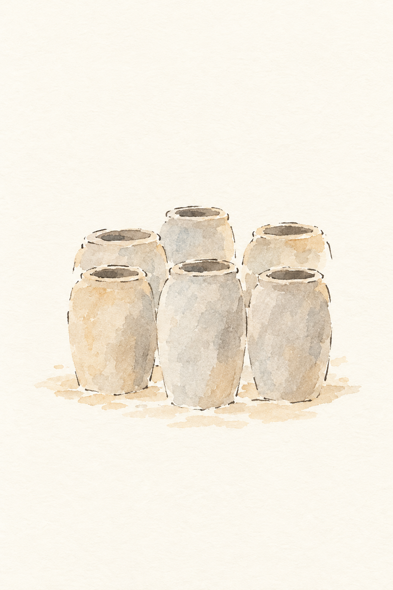

FIG-MARIA-MUTTER-JESU__r1v1.png: bestanden, 4 Punkte, Kern 1 Das höhere Alter ist nicht klar erkennbar; Gesichtsfalten und leicht gebeugte Haltung werden nicht erwähnt.
Blind: A woman stands alone with her hands clasped in front of her. She smiles slightly and looks to the right. – She could be a traditional depiction of Mary, but nothing visible identifies a particular Bible story or moment.

FIG-MARIA-MUTTER-JESU__r1v2.png ✔ gewählt: bestanden, 5 Punkte, Kern 2 Fältchen und leicht gebeugte Haltung nicht erwähnt; Schleierfarbe nur als hell beschrieben.
Blind: A woman stands alone with her hands folded in front of her. She smiles gently while looking to the right. – No particular Bible story or moment can be identified from the image alone.

FIG-GRUPPE-DIENER__r1v1.png: durchgefallen, 4 Punkte, Kern 1 Frauen fehlen; unterschiedliche Altersgruppen, Gürtel und hochgekrempelte Ärmel sind nicht erkennbar.
Blind: Two men stand side by side, looking toward each other. One holds a basin and the other holds a jug. – Possibly servants associated with the wedding at Cana, but the image does not identify a particular Bible story or exact moment.

FIG-GRUPPE-DIENER__r1v2.png ✔ gewählt: bestanden, 4 Punkte, Kern 1 Gürtel und hochgekrempelte Ärmel werden nicht erwähnt; die Frau trägt eine Kopfbedeckung statt barhäuptig zu sein.
Blind: A man and a woman stand side by side, each holding a vessel. They face generally forward, with the woman looking slightly to the right. – Possibly servants at the wedding at Cana, but the image does not establish a particular Bible story or moment.

FIG-OBJ-KRUG-WASSER__r1v1.png ✔ gewählt: bestanden, 2 Punkte, Kern 1 Material (Stein), hellgraue Farbe und hüfthohe Größe fehlen.
Blind: Six jars stand clustered together. No people or activity are shown. – The six jars may allude to the wedding at Cana, where Jesus turned water into wine, but no specific moment is identifiable from the image alone.

FIG-OBJ-KRUG-WASSER__r1v2.png: bestanden, 2 Punkte, Kern 1 Stein als Material und hüfthohe Größe nicht angegeben.
Blind: Six jars stand together. No people or activity are shown. – Possibly the six water jars at the wedding at Cana, where Jesus turned water into wine. The picture does not show the contents or establish a particular moment in the story.